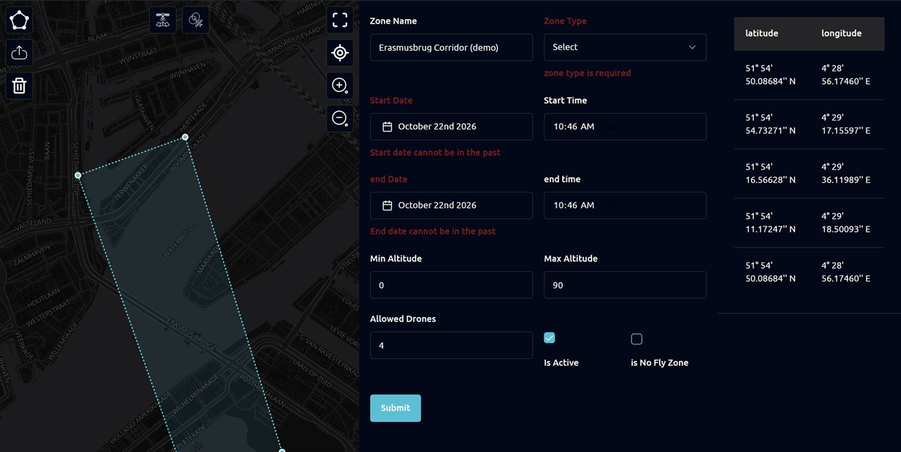
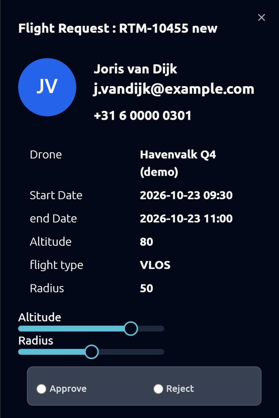

Case 16 · TypeScript platform
Building the platform in TypeScript
In 2024 the team built a TypeScript version of the platform. I wrote 3,100+ lines of it: zone, alert and deconfliction screens and their typed APIs.
- TypeScript
- TanStack Router
- React Hook Form
- Zod
The stack
TanStack Router with file-based routes, TanStack Query, React Hook Form with Zod schemas, Tailwind and shadcn components.
My part
- Zone and approver-zone forms drawn on the map, with typed zone APIs and Zod schemas.
- Alert thresholds and the deconfliction edit screen, each validated by a schema.
- The calendar view and the request detail panel with altitude and radius sliders and approve or reject.
Result
The same patterns, typed APIs and schema-first forms, carried into my TypeScript work on the main platform.



